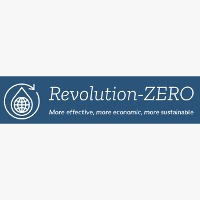
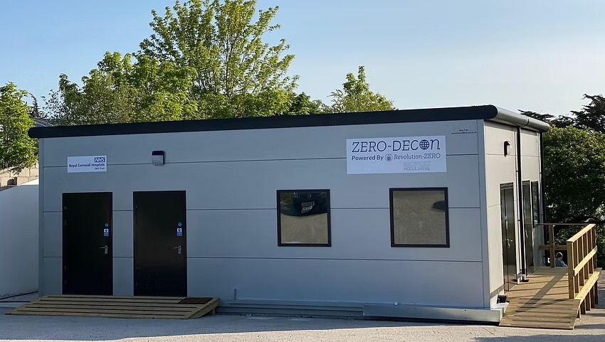
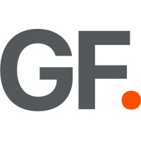
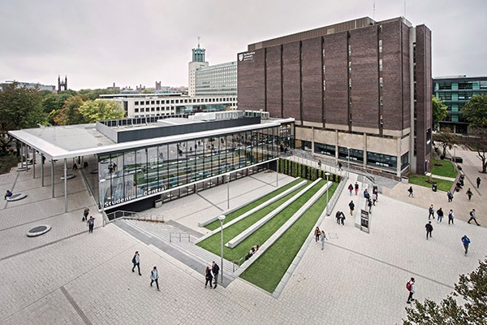

October 2025 – Present
October 2025 – Present
Project Planner / Planning Engineer
Facilities And Building Solutions (FABS) – Client: PepsiCo India Holdings Pvt. Ltd.
Pune, India
- Develop and maintain 3-tier schedules (L1-L3) across 30+ work packages, achieving 98% milestone compliance over 5 months.
- Coordinate daily/weekly lookaheads with 20+ subcontractor teams, reducing workfront conflicts by 30%.
- Track progress against baseline; identified 15+ float risks and escalated 4 critical delays, enabling recovery actions that saved ~3 weeks of potential slippage.
- Prepare daily, weekly, and monthly progress reports for leadership and client reviews; reduced report generation time by 40% via standardized dashboards.
- Implemented progress measurement system covering 200+ activities, improving schedule variance tracking to within ±5%.
Click to see full details


November 2024 – July 2025Technical Project Manager
Revolution-ZERO
Four Marks, Hampshire, UK
- Led end-to-end delivery of 2+ large-scale sterilization plant projects across the UK, overseeing a combined CAPEX value of £3M+.
- Managed project scope, schedules, resources, budgets, technical coordination, and delivery milestones.
- Worked cross-functionally with engineering, site teams, quality, sales, suppliers, and operational stakeholders.
- Established and monitored KPIs, project reporting structures, and risk registers, improving visibility and decision-making.
- Used AutoCAD to create, review, and update 2D technical drawings, including layouts, fabrication plans, and as-built documentation.
Click to see full details
May 2023 – July 2023
IT Service Desk Analyst
NHS Business Services Authority
Newcastle upon Tyne, UK
- Provided technical support during a large-scale email migration project, maintaining a 95% issue resolution rate.
- Supported users across enterprise systems including Azure, Exchange, Microsoft 365, and SCCM.
- Managed service desk tickets, troubleshooting, user setup, and issue resolution within a high-pressure operational environment.
- Contributed to service continuity and delivery reliability during a critical transformation programme.
Click to see full details

Project Manager – ERP Implementation
Gray Fox Consulting
Newcastle upon Tyne, UK
- Led analysis of business processes and operational workflows to identify digital improvement opportunities through ERP implementation.
- Delivered recommendations contributing to a 10% efficiency improvement and projected annual savings of $100,000.
- Conducted structured risk analysis and developed mitigation strategies that reduced identified project risks by 30%.
- Developed an implementation roadmap that shortened projected project timelines by 15%.
Click to see full details


February 2022 – July 2023Senior Student Inclusion Consultant
Northumbria University
Newcastle upon Tyne, UK
- Supported development and implementation of Diversity & Inclusion initiatives across university programmes and stakeholder groups.
- Contributed to institutional initiatives that helped improve student satisfaction outcomes.
- Presented at the RAISE (2022) and Jisc Change Agent Network (2023) conferences.
- Co-organised a TED Talk event at Northumbria Students' Union.
Click to see full details